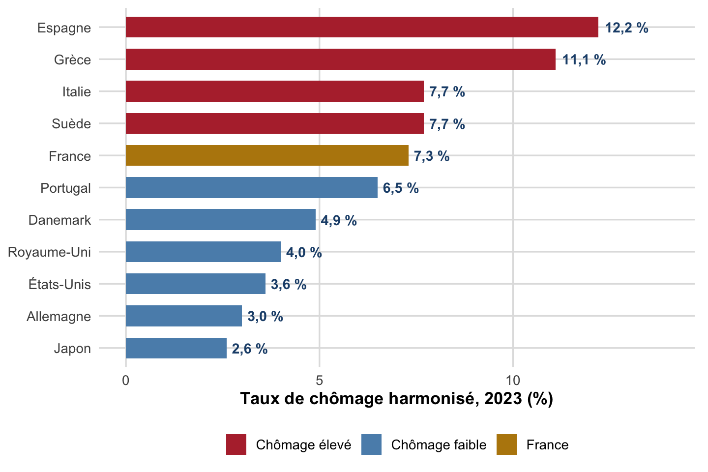
Chapitre II : Le marché du travail et la politique de l’emploi
Spécificités, mesures et théories du chômage
Résumé complet du chapitre II : indicateurs du marché du travail, typologie du chômage, puis quatre cadres théoriques : néoclassique, keynésien, WS-PS et appariement.
Objectifs de la séance
À l’issue de ce chapitre, vous saurez :
- Expliquer pourquoi le marché du travail n’est pas un marché comme les autres et distinguer les trois modèles nationaux de fonctionnement (flexibilité, sécurité, flexisécurité).
- Calculer et interpréter les indicateurs clés du marché du travail (population active, taux d’activité, taux d’emploi, taux de chômage) et distinguer la mesure INSEE/BIT de la mesure France Travail.
- Distinguer les différentes formes de chômage (frictionnel, classique, technologique, d’inadéquation, keynésien, technique) et les notions de chômage structurel/conjoncturel et volontaire/involontaire.
- Restituer les quatre grands cadres théoriques expliquant le chômage (néoclassique, keynésien, WS-PS, appariement) et les mécanismes qu’ils mettent en avant.
- Représenter et commenter les modèles graphiques associés : offre/demande de travail, courbe de Phillips, loi d’Okun, WS-PS, courbe de Beveridge.
Ce chapitre s’appuie sur les enseignements de M. Ouedraogo (CERDI, Université Clermont Auvergne)1. Il se divise en deux grandes parties. La Partie 1 dresse un portrait descriptif du marché du travail : ses spécificités, ses indicateurs de mesure et la typologie des différentes formes de chômage. La Partie 2 présente quatre cadres théoriques successifs (néoclassique, keynésien, WS-PS et appariement) qui proposent chacun une explication différente des causes du chômage et donc des politiques économiques à mettre en œuvre pour le réduire.
Partie 1 : Le marché du travail : un objet d’étude spécifique
1.1 Les spécificités du marché du travail
Marché du travail. Lieu théorique de confrontation entre la demande de travail (les entreprises, qui offrent des emplois) et l’offre de travail (les ménages, qui offrent leur force de travail en demandant un emploi). Attention au vocabulaire : celui qui demande du travail (l’entreprise) offre de l’emploi, tandis que celui qui offre du travail (l’individu) demande de l’emploi.
Le marché du travail présente plusieurs spécificités qui le distinguent radicalement d’un marché de biens ordinaire.
- Ce qui s’échange, ce sont des personnes, pas des marchandises. Le contrat de travail n’est donc pas une simple variante du contrat commercial : il engage la personne du salarié, sa subordination et sa durée de vie professionnelle.
- De fortes asymétries d’information. Deux problèmes classiques apparaissent :
- la sélection adverse (avant la signature du contrat) : l’employeur ne connaît pas parfaitement les compétences et la motivation réelles des candidats, ce qui peut le conduire à recruter des profils moins productifs qu’espéré (un salaire trop bas dissuade les meilleurs candidats de postuler) ;
- l’aléa moral (après la signature du contrat) : l’employeur ne peut observer parfaitement l’effort du salarié une fois celui-ci protégé par son contrat (un salarié en CDI peut être moins incité à fournir un effort maximal).
- Un marché segmenté par compétences et par secteurs, plutôt qu’un marché unique et homogène.
- L’absence de mécanisme évident assurant le plein emploi. Contrairement à un marché de biens standard, rien ne garantit un ajustement automatique de l’offre à la demande.
- L’absence de théorie unifiée. C’est précisément ce qui explique la pluralité des cadres théoriques présentés en Partie 2 : chacun met l’accent sur un mécanisme différent.
Comprendre le fonctionnement du marché du travail est un enjeu de première importance : la sous-utilisation de la main-d’œuvre représente un gaspillage de potentiel productif, le chômage engendre des tensions sociales et un accroissement de la pauvreté, et le travail demeure la première source de revenu des ménages, d’où l’attention portée aux inégalités d’accès à l’emploi entre hommes et femmes, jeunes et seniors, qualifiés et non qualifiés.
1.2 Trois modèles nationaux de fonctionnement du marché du travail
Une comparaison internationale des taux de chômage fait apparaître des écarts durables entre pays : chômage structurellement plus faible aux États-Unis, au Japon, en Allemagne, au Royaume-Uni et dans les pays nordiques ; chômage plus élevé en Europe du Sud (France, Espagne, Portugal, Italie, Grèce). Or ces pays à faible chômage ne partagent pas le même modèle institutionnel, d’où la typologie suivante.
Note
Nuance à garder en tête : la Suède (7,7 %) et le Portugal (6,5 %) ne suivent pas exactement la partition Nord/Sud attendue, la réalité est plus continue que la typologie ne le suggère.
Trois modèles de fonctionnement du marché du travail
- Flexibilité (pays anglo-saxons) : faible protection de l’emploi, assurance chômage peu généreuse, faible accompagnement des chômeurs. Ni les emplois ni les travailleurs ne sont protégés.
- Sécurité (Europe continentale, dont la France) : protection de l’emploi élevée, assurance chômage généreuse, accompagnement limité des chômeurs. Les emplois et les travailleurs sont protégés.
- Flexisécurité (pays nordiques, Danemark en particulier) : faible protection de l’emploi, mais assurance chômage généreuse et conditionnelle à la recherche active d’emploi, combinée à un accompagnement important des chômeurs. Les emplois ne sont pas protégés mais les travailleurs le sont.
Le modèle « flexibilité » a permis de contenir le chômage au prix d’une forte hausse des inégalités de revenus entre travailleurs qualifiés et peu qualifiés (emplois précaires et peu rémunérés), c’est notamment le choix fait par le Royaume-Uni. Le modèle « sécurité » limite la hausse des inégalités de revenus mais au prix d’un chômage de longue durée plus élevé pour les travailleurs peu qualifiés. Le modèle « flexisécurité » cherche à combiner les deux : réallocation rapide de la main-d’œuvre et protection des personnes plutôt que des postes.
flowchart TD
MT[Marché du travail] --> FL[Flexibilité - pays anglo-saxons]
MT --> SE[Sécurité - Europe continentale]
MT --> FS[Flexisécurité - pays nordiques]
FL --> FL1[Protection emploi faible]
FL --> FL2[Indemnisation chômage faible]
FL --> FL3[Accompagnement faible]
SE --> SE1[Protection emploi forte]
SE --> SE2[Indemnisation chômage généreuse]
SE --> SE3[Accompagnement limité]
FS --> FS1[Protection emploi faible]
FS --> FS2[Indemnisation généreuse et conditionnelle]
FS --> FS3[Accompagnement important]
Lecture : les trois modèles se distinguent par le dosage entre protection de l’emploi, générosité de l’indemnisation et intensité de l’accompagnement des chômeurs.
AstucePour aller plus loin
La comparaison des trois modèles et le « triangle d’or » danois (flexibilité + sécurité sociale + politique active de l’emploi) seront repris en détail au Chapitre III, consacré aux politiques de l’emploi.
Le clivage se lit aussi géographiquement : la carte ci-dessous fait apparaître un net gradient Nord/Sud au sein de l’Union européenne.

Note
Le gradient Nord/Sud est visible mais pas parfaitement continu : l’Espagne (12,2 %) et la Grèce (11,1 %) se détachent nettement, tandis que le Portugal (6,5 %) se rapproche des niveaux d’Europe centrale.
1.3 Mesurer le marché du travail
Population active, taux d’activité et taux d’emploi
Selon les critères de l’Organisation Internationale du Travail (OIT) :
\[ \text{Population active} = \text{Employés} + \text{Chômeurs} \]
La population active représente l’offre de travail sur le marché. Ses principaux déterminants sont : le taux d’activité des femmes, la structure par âge de la population, les flux migratoires, la durée des études, et l’âge de départ à la retraite.
Les inactifs sont les personnes en âge de travailler qui ne sont ni en emploi, ni activement à la recherche d’un emploi : personnes ne souhaitant pas travailler (chômeurs découragés, personnes malades ou en situation de handicap, personnes au foyer), personnes n’ayant pas l’âge légal de travailler, étudiants, retraités.
Taux d’activité (ou de participation) \(= \dfrac{\text{Population active}}{\text{Population en âge de travailler}}\), proportion de la population en âge de travailler qui est active (en emploi ou au chômage).
Taux d’emploi \(= \dfrac{\text{Employés}}{\text{Population en âge de travailler}}\), proportion de la population en âge de travailler qui est effectivement en emploi.
Taux de chômage \(= \dfrac{\text{Chômeurs}}{\text{Population active}}\), proportion de la population active qui est au chômage.
Deux mesures concurrentes du chômage en France
ImportantÀ retenir : deux définitions du chômage
INSEE (au sens du BIT) : un chômeur est une personne répondant simultanément à trois critères :
- être sans emploi durant la période de référence (les quatre semaines précédant l’enquête) ;
- être disponible pour travailler dans les deux semaines ;
- être activement à la recherche d’un emploi (démarches spécifiques engagées).
France Travail (ex-Pôle Emploi) : comptabilise les personnes inscrites répondant à trois critères proches (sans emploi, inscrites, disponibles), mais découpe la population des demandeurs d’emploi en cinq catégories (A à E), notamment pour tenir compte : - des personnes en activité réduite (moins de 78 heures/mois) qui continuent à chercher un emploi à temps plein ; - des personnes inscrites mais n’effectuant aucune recherche active.
Les deux mesures divergent donc structurellement : le chiffre France Travail dépend de choix administratifs (inscription), le chiffre INSEE/BIT d’une enquête standardisée internationalement comparable.
France Travail répartit précisément les demandeurs d’emploi inscrits en cinq catégories :
| Catégorie | Situation |
|---|---|
| A | Sans emploi, tenues de rechercher activement un emploi |
| B | Activité réduite courte, tenues de rechercher un emploi |
| C | Activité réduite longue, tenues de rechercher un emploi |
| D | Sans emploi, non tenues de rechercher (formation, maladie…) |
| E | En emploi (contrat aidé, création d’entreprise…), non tenues de rechercher |
Le graphique suivant confronte, sur longue période, le chiffre INSEE/BIT et deux agrégats France Travail : la catégorie A seule, puis les catégories A+B+C réunies (qui incluent l’activité réduite).

Note
Les trois courbes restent structurellement ordonnées (BIT < catégorie A < catégories A+B+C), preuve visuelle que les deux logiques de mesure ne comptent pas la même population.
Le chômage de longue durée désigne une recherche d’emploi qui se prolonge au-delà de 12 mois, un critère central pour comprendre les trajectoires de déqualification (voir §1.5 sur l’hystérèse).
Les limites du taux de chômage comme indicateur unique
Le taux de chômage seul peut masquer des réalités très différentes.
- Relation avec le taux d’activité. Une baisse du taux de chômage peut résulter d’une baisse de la population active (chômeurs découragés qui cessent de chercher un emploi) plutôt que d’une reprise économique. Dans le cas extrême où tous les chômeurs cesseraient de chercher un emploi, le taux de chômage tomberait à zéro sans la moindre création d’emploi.
- Relation avec le taux d’emploi. Deux pays affichant le même taux de chômage peuvent avoir des taux d’emploi très différents selon le niveau de participation au marché du travail (proportion d’inactifs). Cas réel : la Suède et l’Italie affichaient en 2023 un taux de chômage quasi identique (7,7 %), mais des taux d’emploi et d’activité très différents.
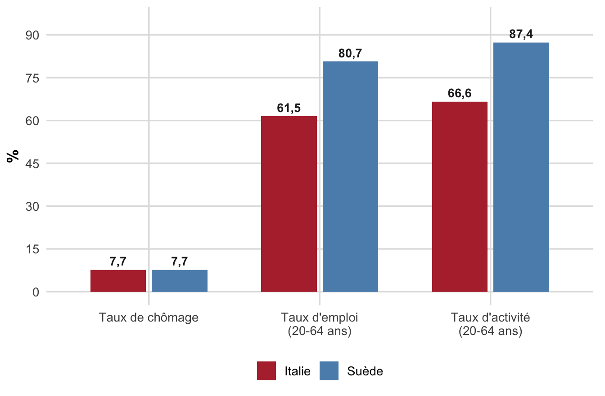
Le taux de chômage identique masque donc deux réalités opposées : la Suède combine chômage faible, emploi élevé et forte participation, tandis que l’Italie combine chômage tout aussi faible mais emploi et participation très en retrait, signe d’un halo d’inactivité bien plus large.
- Le rôle des flux. Un même taux de chômage peut recouvrir un marché du travail très dynamique (beaucoup d’embauches, beaucoup de séparations, chômage de courte durée, cas américain) ou au contraire peu de mouvements et un chômage de longue durée concentré sur une minorité (cas français). En France, environ 4 % des personnes en emploi à un trimestre donné ne le sont plus au trimestre suivant, contre 40 % des chômeurs qui sortent du chômage d’un trimestre à l’autre. Ceci illustre une idée centrale : l’emploi n’est pas un stock à partager, mais un flux à canaliser.
Le halo du chômage
Halo du chômage. Ensemble des situations dans lesquelles les frontières entre emploi, chômage et inactivité sont difficiles à établir, les critères INSEE/BIT étant stricts, de nombreuses situations intermédiaires échappent à la mesure officielle du chômage.
Deux catégories principales relèvent du halo du chômage :
- Le sous-emploi (temps partiel subi) : personnes travaillant à temps partiel (moins de 35 heures/semaine en France) qui souhaiteraient travailler davantage et recherchent (activement ou non) un emploi à temps plein, à distinguer du temps partiel choisi. Le temps partiel subi concerne très majoritairement les femmes (environ 80 % des emplois à temps partiel) et les emplois peu qualifiés. Il pose plusieurs problèmes : rémunération plus faible, droits sociaux moindres (retraite, assurance chômage), accès limité à la formation continue.
- L’emploi temporaire : statut d’actif de courte durée alternant emploi, chômage et inactivité. Il regroupe les CDD, les missions d’intérim, les stages rémunérés et les emplois aidés. En France, les CDI restent la norme (environ 88 % des salariés hors intérim), mais la part des recrutements en CDD a fortement augmenté depuis les années 1980, en particulier les CDD de très courte durée dans le secteur tertiaire, d’où un phénomène de dualisation du marché du travail entre salariés en emploi stable et salariés multipliant les contrats courts.
Note
Ce halo du chômage explique pourquoi, à côté du taux de chômage, les économistes surveillent aussi le taux de non-emploi (proportion de personnes sans emploi dans la population en âge de travailler), qui inclut à la fois les chômeurs BIT et une partie des inactifs proches du marché du travail.
1.4 Typologie des différentes formes de chômage
Il est essentiel de distinguer le chômage selon son horizon temporel (structurel/conjoncturel), car les politiques économiques adaptées diffèrent radicalement selon le diagnostic posé.
Chômage structurel (long terme) : chômage lié aux mutations durables des structures de l’économie : rigidités du marché du travail, changement technologique, inadéquation des qualifications. Il appelle des réformes structurelles agissant sur l’offre.
Chômage conjoncturel (court terme) : chômage temporaire lié à une baisse ponctuelle de l’activité économique (choc négatif). Il appelle des politiques de relance de la demande d’inspiration keynésienne.
Les composantes du chômage structurel
| Type | Mécanisme |
|---|---|
| Frictionnel (ou de mobilité) | Temps nécessaire pour retrouver un emploi entre deux postes, période de transition inévitable, même dans une économie proche du plein emploi. |
| Classique (ou volontaire) | Rigidité à la baisse du salaire réel : un salaire trop élevé réduit la rentabilité de la production et donc l’incitation à embaucher. Signe caractéristique : coexistence d’un chômage élevé, de salaires élevés et d’une faible rentabilité des entreprises. |
| Technologique | Substitution du capital (machines) au travail dans un objectif de hausse de la productivité. |
| D’inadéquation | Décalage entre les compétences offertes par les travailleurs et celles demandées par les entreprises. |
Les composantes du chômage conjoncturel
| Type | Mécanisme |
|---|---|
| Keynésien | Insuffisance de la demande anticipée par les entreprises sur le marché des biens et services. Signe caractéristique : coexistence d’un chômage élevé, de salaires faibles et d’une demande de biens et services faible. |
| Technique | Baisse momentanée de l’activité (baisse de la demande, difficultés d’approvisionnement, catastrophe naturelle…) conduisant à un arrêt ou un ralentissement temporaire de la production ; les travailleurs conservent leur contrat de travail. |
flowchart TD
CH[Chômage] --> ST[Structurel - long terme]
CH --> CJ[Conjoncturel - court terme]
ST --> F1[Frictionnel]
ST --> F2[Classique]
ST --> F3[Technologique]
ST --> F4[Inadéquation]
CJ --> F5[Keynésien]
CJ --> F6[Technique]
Lecture : le chômage structurel appelle des réformes structurelles côté offre, le chômage conjoncturel des politiques de relance de la demande.
AvertissementErreur fréquente
Ne pas confondre chômage structurel/conjoncturel (horizon temporel) et chômage volontaire/involontaire (le travailleur souhaite-t-il ou non travailler au salaire de marché ?). Ces deux distinctions se recoupent partiellement mais ne sont pas identiques : le chômage classique est qualifié de volontaire par les néoclassiques mais il est bien structurel ; le chômage keynésien est involontaire et conjoncturel.
1.5 Évolutions de longue période et débat sur les institutions
L’évolution du chômage en Europe et aux États-Unis depuis les années 1970 permet d’illustrer concrètement cette typologie.
Années 1970 : choc d’offre négatif. Les deux chocs pétroliers (1973 et 1979) provoquent une stagflation (hausse simultanée du chômage et de l’inflation) sous l’effet conjugué de la hausse du prix du pétrole, du ralentissement des gains de productivité et d’une forte demande de hausses salariales.
Début des années 1980 : choc de demande négatif. La mise en œuvre de politiques monétaires restrictives pour juguler l’inflation provoque une forte hausse du chômage. Ce choc reste temporaire aux États-Unis (marché du travail plus flexible, politique budgétaire expansive de policy-mix, remontée des taux d’intérêt plus brève) mais devient durable en Europe.
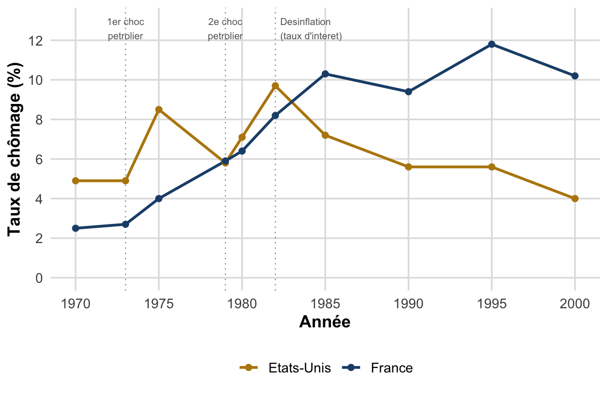
Hystérèse du chômage. Un choc temporaire sur l’économie peut avoir des effets permanents, empêchant le retour de l’économie à son état initial. Appliquée au marché du travail : une longue période de chômage élevé fait augmenter le taux de chômage structurel lui-même, via (i) la hausse de la proportion de chômeurs de longue durée, (ii) le découragement croissant et (iii) la dépréciation du capital humain des chômeurs (perte de compétences, de réseau, d’employabilité).
Ce mécanisme explique en partie pourquoi la désinflation des années 1980, coûteuse en emplois à court terme, a laissé des traces durables sur le chômage structurel européen.
Le premier canal de l’hystérèse, la hausse de la proportion de chômeurs de longue durée, se lit directement dans les données : un même taux de chômage agrégé peut cacher des dynamiques de persistance très différentes.
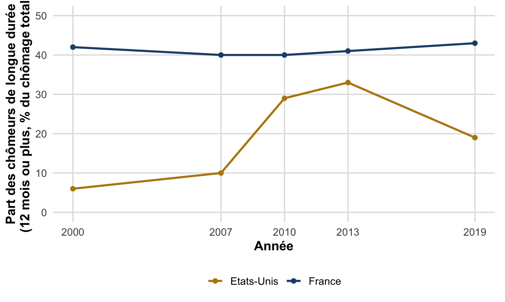
Note
Aux États-Unis, la persistance suit surtout le cycle (choc, puis retour progressif) ; en France, elle est structurelle et permanente, signe d’une hystérèse plus profondément installée.
Depuis les années 1990 : le débat sur le rôle des institutions. Le chômage européen atteint un pic dans les années 1990, mais on observe ensuite une divergence croissante entre pays européens, remettant en cause l’explication purement « hystérétique » : les chocs des années 1970-1980 étaient largement communs à toute l’Europe et ne peuvent, à eux seuls, expliquer des trajectoires nationales aussi différentes dans les décennies suivantes. L’attention se porte alors sur les institutions nationales du marché du travail.
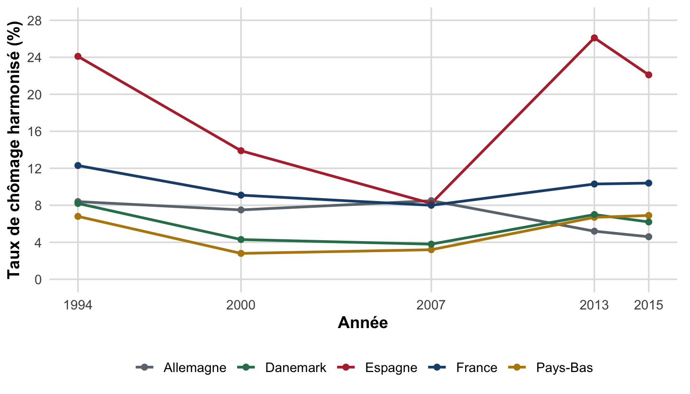
NoteLe débat institutionnaliste : deux lectures
Thèse des rigidités. Le chômage élevé de certains pays européens proviendrait de contraintes excessives sur les entreprises, freinant leur adaptation aux chocs (mondialisation, changement technologique) : cotisations sociales élevées, coût des licenciements important, pouvoir syndical, allocations chômage généreuses, salaire minimum élevé par rapport au salaire médian.
Objection. Beaucoup de ces réglementations existaient déjà dans les années 1960, période de plein emploi, et certaines rigidités se sont même réduites depuis (allègement de charges, essor de l’emploi temporaire, affaiblissement syndical).
Réponse. Les mêmes institutions peuvent avoir des effets différents selon l’environnement économique : ralentissement des gains de productivité, changement technologique plus rapide et concurrence internationale accrue rendent aujourd’hui l’adaptation des entreprises bien plus nécessaire qu’en 1960, d’où un coût des rigidités plus élevé qu’autrefois. La baisse de la demande de travail peu qualifié s’est traduite, selon les pays, soit par une baisse des salaires réels sans hausse du chômage (États-Unis), soit par une hausse du chômage sans baisse des salaires réels (Europe continentale, dont la France), illustrant deux modes d’ajustement du marché du travail face au même choc structurel.
Il n’existe donc pas de « voie unique » vers le plein emploi : plusieurs combinaisons institutionnelles cohérentes permettent de réduire le chômage (flexibilité à l’américaine, flexisécurité à la danoise), à condition que les différentes institutions du marché du travail soient complémentaires entre elles. Ce débat institutionnaliste ouvre directement sur le Chapitre III, consacré aux politiques de l’emploi.
Partie 2 : Quatre cadres théoriques expliquant le chômage
La Partie 1 a montré qu’il n’existe pas de théorie unifiée du marché du travail. Cette seconde partie présente, dans l’ordre chronologique de leur développement, quatre grands cadres théoriques qui apportent chacun un éclairage complémentaire (et souvent concurrent) sur les causes du chômage : l’analyse néoclassique, l’analyse keynésienne, le modèle WS-PS, et la théorie de l’appariement.
flowchart LR
NC[Néoclassique - salaire flexible] --> KY[Keynésien - demande effective]
KY --> WP[WS-PS - institutions salariales]
WP --> AP[Appariement DMP - frictions]
Lecture : chaque cadre s’est développé en réaction aux limites du précédent, sans l’invalider entièrement, voir la synthèse en fin de chapitre.
2.1 L’analyse néoclassique du marché du travail
Principes généraux
L’analyse néoclassique traite l’offre et la demande de travail comme celles de n’importe quelle marchandise, sous les hypothèses de la concurrence pure et parfaite. Deux hypothèses clés structurent le raisonnement : les agents sont rationnels (les ménages maximisent leur utilité, les entreprises leur profit), et le travail fait l’objet d’un arbitrage : entre loisir et travail pour les ménages, entre capital et travail pour les entreprises.
L’offre de travail
Salaire de réserve \(w_r\). Rémunération minimale qu’un individu est prêt à accepter pour occuper un emploi. En-deçà de ce seuil, il préfère rester inactif. Ses déterminants : revenus du ménage et transferts publics, qualification (éducation, expérience), coûts fixes liés au travail (garde d’enfants, transport), fiscalité sur les revenus du travail.
Chaque individu répartit son temps entre travail et loisir de façon à maximiser son utilité sous contrainte de budget. Une hausse du salaire réel produit deux effets contradictoires :
- effet de substitution : le loisir devient plus « cher » (en coût d’opportunité) \(\Rightarrow\) l’individu offre davantage de travail ;
- effet de revenu : à salaire plus élevé, un même niveau de vie est atteint avec moins d’heures travaillées \(\Rightarrow\) l’individu peut choisir de travailler moins et de consommer plus de loisir.
Par simplification, le modèle néoclassique retient l’hypothèse selon laquelle l’effet de substitution domine l’effet de revenu : l’offre agrégée de travail \(L^s\) est une fonction croissante du salaire réel \(w\).
AvertissementNuance empirique : et sur longue période ?
Cette hypothèse simplificatrice (l’effet de substitution domine) est raisonnable à court terme, mais elle s’inverse sur longue période. Alors que le salaire réel était multiplié par environ 10 en France entre 1950 et 2019, la durée annuelle du travail a été divisée par deux sur la même période : c’est donc l’effet de revenu qui l’a finalement emporté sur la marge des heures travaillées de long terme, les ménages ayant choisi de convertir une partie des gains de productivité en loisir plutôt qu’en heures travaillées supplémentaires.
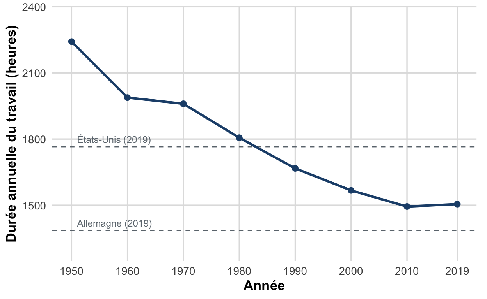
Note
Ce fait empirique nuance l’hypothèse simplificatrice du modèle sur le long terme, sans l’invalider sur le court terme : à court terme, pour une hausse ponctuelle du salaire, l’effet de substitution reste plausible.
La demande de travail
À court terme, le capital étant fixe, les entreprises embauchent jusqu’à égaliser le salaire réel à la productivité marginale du travail : la demande de travail est une fonction décroissante du salaire réel (plus le coût du travail est élevé, plus les coûts de production augmentent). À long terme, les entreprises peuvent arbitrer entre capital et travail (substitution des facteurs), mais la relation décroissante entre demande de travail et salaire réel demeure. La demande agrégée de travail \(L^d\) est la somme des demandes individuelles des entreprises.
Équilibre et chômage volontaire
L’intersection des courbes d’offre et de demande détermine le salaire d’équilibre \(w^*\) et l’emploi d’équilibre \(L^*\).
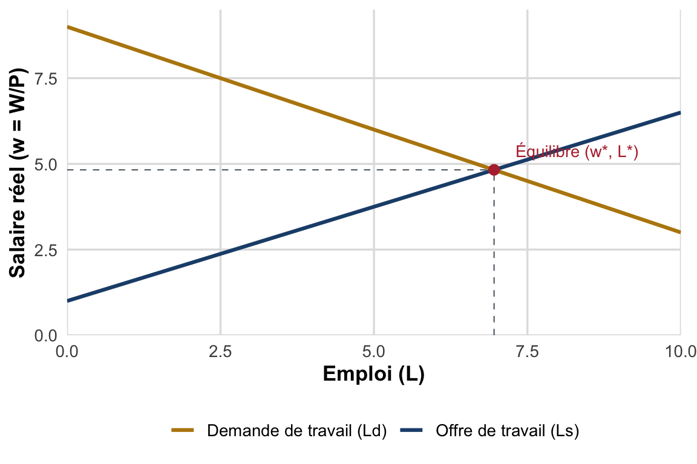
Pour les néoclassiques, il n’existe pas de chômage involontaire à l’équilibre : tout individu disposé à travailler au taux de salaire de marché trouve un emploi. Le chômage résiduel observé est qualifié de chômage volontaire : il s’agit d’individus dont le salaire de réserve est supérieur au salaire de marché en vigueur, et qui choisissent donc de ne pas travailler à ce prix.
Chocs et ajustement par les salaires
Dans ce cadre, les salaires sont parfaitement flexibles et constituent la variable d’ajustement du marché : tout choc se traduit par un déplacement de l’une des deux courbes, suivi d’un ajustement du salaire qui ramène le marché à l’équilibre de plein emploi. Exemples de chocs et de leurs effets attendus :
| Choc | Courbe affectée | Effet attendu |
|---|---|---|
| Immigration massive | Offre de travail \(\uparrow\) | Salaire réel \(\downarrow\), emploi \(\uparrow\) |
| Hausse des indemnités chômage | Offre de travail \(\downarrow\) (salaire de réserve \(\uparrow\)) | Salaire réel \(\uparrow\), emploi \(\downarrow\) |
| Baisse de l’impôt sur le revenu | Offre de travail \(\uparrow\) | Salaire réel \(\downarrow\), emploi \(\uparrow\) |
| Hausse de la productivité du travail | Demande de travail \(\uparrow\) | Salaire réel \(\uparrow\), emploi \(\uparrow\) |
| Automatisation (tâches peu qualifiées) | Demande de travail \(\downarrow\) | Salaire réel \(\downarrow\), emploi \(\downarrow\) (pour les non-qualifiés) |
AstuceExtension : travail et immigration, le cliché à l’épreuve des faits
Le cliché, fréquent dans le débat public, veut que l’immigration « prenne les emplois » des natifs et tire les salaires vers le bas. Le raisonnement s’appuie implicitement sur le modèle néoclassique le plus simple : un afflux de travailleurs déplace l’offre de travail \(L^s\) vers la droite, ce qui abaisse le salaire d’équilibre et, si le salaire est rigide, augmente le chômage.
Ce raisonnement a deux angles morts. D’abord, il suppose la demande de travail fixe, en oubliant que les immigrés sont aussi des consommateurs (ils accroissent la demande de biens, donc la demande de travail) et parfois des créateurs d’activité : il n’y a pas de « quantité fixe d’emplois » à se partager (sophisme du lump of labour). Ensuite, natifs et immigrés sont souvent complémentaires plutôt que substituts (métiers, langues, qualifications différentes).
Les faits confirment ces réserves. L’étude fondatrice de David Card (1990) sur l’« exode de Mariel » (arrivée soudaine d’environ 125 000 Cubains à Miami en 1980, soit près de +7 % de la main-d’œuvre locale) ne trouve aucun effet mesurable sur les salaires ni le chômage des travailleurs déjà présents. La littérature empirique ultérieure (méta-analyses ; OCDE, Perspectives des migrations internationales ; Conseil d’analyse économique) converge : à moyen-long terme, l’effet de l’immigration sur les salaires et l’emploi des natifs est faible, souvent nul, parfois positif, et la contribution budgétaire nette des immigrés est généralement positive. Des effets négatifs faibles, temporaires et localisés peuvent néanmoins apparaître pour les segments les moins qualifiés ou pour les vagues d’immigrés précédentes (les plus proches substituts).
Pédagogiquement, c’est un cas où un modèle néoclassique naïf (choc d’offre \(\rightarrow\) baisse du salaire) est contredit par les données dès lors que l’on tient compte de la demande et de la complémentarité : d’où l’importance, tout au long de ce chapitre, de confronter la théorie aux faits.
Sources : Card, D. (1990), « The Impact of the Mariel Boatlift on the Miami Labor Market », Industrial and Labor Relations Review ; OCDE, Perspectives des migrations internationales ; Conseil d’analyse économique (CAE), travaux sur l’immigration.
Un salaire minimum trop élevé crée du chômage classique
Si un salaire plancher \(w_{min}\) est imposé au-dessus du salaire d’équilibre \(w^*\), l’offre de travail excède la demande à ce niveau de salaire : c’est le chômage classique déjà identifié au §1.4 (lecture néoclassique : chômage volontaire, au sens où il résulte d’un prix administré trop élevé, non d’une insuffisance de la demande).
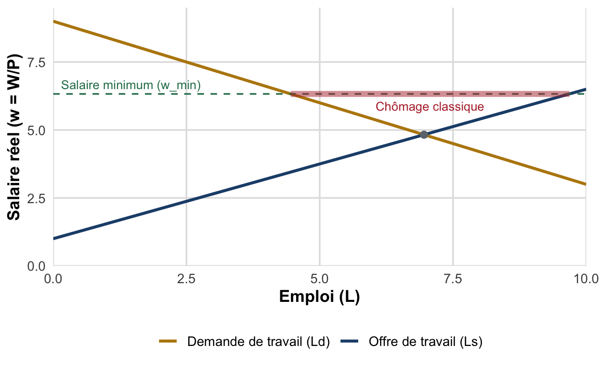
Indice de Kaitz. Rapport entre le salaire minimum légal et le salaire médian des salariés à temps plein. Plus l’indice est élevé, plus le salaire minimum est susceptible de dépasser le salaire d’équilibre \(w^*\) néoclassique et donc de créer du chômage classique.
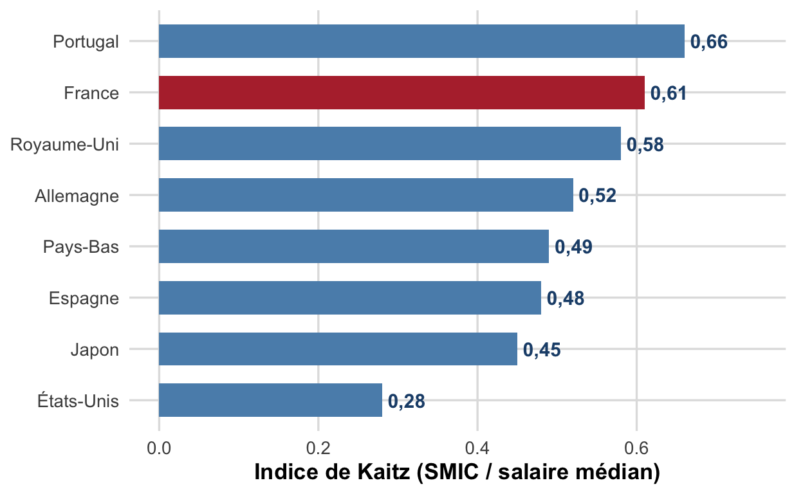
Coin fiscal (« tax wedge »). Écart entre le coût du travail payé par l’employeur (salaire brut + cotisations patronales) et le salaire net réellement perçu par le salarié (après cotisations salariales et impôts). Un coin fiscal élevé déplace la courbe de demande de travail \(L^d\) vers la gauche : le coût pour l’entreprise augmente à salaire net inchangé, donc à rigidité salariale donnée, l’emploi d’équilibre baisse.

D’où la préconisation néoclassique de baisser le coût du travail pour résorber ce chômage : réduction des cotisations patronales et du coin fiscal, limitation des hausses du salaire minimum au-delà de l’inflation et de la productivité, assouplissement des conventions collectives (voir Chapitre III pour l’analyse détaillée des politiques françaises de baisse du coût du travail, allègements de cotisations, CICE).
Implications de politique économique et limites
Le modèle néoclassique recommande de laisser agir les forces du marché : limiter les interventions publiques directes, rendre les salaires flexibles (éviter un salaire minimum trop élevé ou des conventions collectives trop rigides), assouplir le droit du travail, et réduire les prélèvements et prestations qui désincitent au travail (risque de trappe à inactivité : le retour à l’emploi n’apporte qu’un gain financier faible, voire nul, par rapport à l’inactivité indemnisée).
AvertissementLimites de l’approche néoclassique
- Hypothèses irréalistes : les salaires sont souvent administrés (SMIC, conventions collectives) et non fixés par un marché atomistique ; le travail est hétérogène (il existe donc plusieurs marchés du travail segmentés, non un seul) ; l’information est coûteuse à obtenir (recherche d’emploi longue) ; des barrières à l’entrée/sortie limitent la fluidité (qualifications requises, coûts de licenciement).
- Ajustement non instantané : rigidités salariales et lenteur des contrats retardent l’ajustement de l’offre à la demande.
- Interdépendance offre-demande : l’analyse suppose offre et demande indépendantes, alors qu’en pratique les décisions d’embauche des entreprises influencent en retour la motivation et la disponibilité des travailleurs.
2.2 L’analyse keynésienne du marché du travail
Critiques de l’approche néoclassique
L’analyse keynésienne adopte une vision macroéconomique du marché du travail : elle prend en compte les effets, sur l’ensemble de l’économie, des variations de salaire, alors que l’approche néoclassique raisonne en équilibre partiel. Elle formule deux critiques principales :
- Sur l’offre de travail : la fonction d’offre pourrait être décroissante plutôt que croissante : la plupart des salariés n’ayant que leur travail comme source de revenu, une baisse des salaires peut les inciter à travailler davantage pour compenser la perte de revenu, ce qui aggraverait le chômage plutôt que de le résorber. À court terme, les rigidités nominales rendent d’ailleurs l’offre de travail largement inélastique au salaire.
- Sur la demande de travail : elle n’est qu’une demande dérivée de la demande anticipée sur le marché des biens et services, et non le résultat d’un pur calcul de productivité marginale. Le marché du travail n’est donc pas un marché autonome : son équilibre ne peut résulter que d’un équilibre général sur l’ensemble des marchés (biens et services, capitaux, monnaie, travail).
La demande effective et le chômage involontaire
Demande effective. Demande anticipée par les entreprises sur le marché des biens et services (consommation des ménages + investissement des entreprises), qui détermine leurs décisions de production et donc d’embauche. Ce n’est pas le coût du travail mais l’état de la conjoncture (via la demande effective) qui gouverne les décisions d’embauche.
flowchart LR
CM[Consommation des ménages] --> DE[Demande effective anticipée]
IE[Investissement des entreprises] --> DE
DE --> DP[Décisions de production]
DP --> EMP[Emploi - embauches]
Lecture : la demande de travail est une demande dérivée, elle dépend de la conjoncture anticipée sur le marché des biens, non d’un pur calcul de productivité marginale.
Chez Keynes, rien ne garantit que les décisions d’épargne des ménages (fonction de leur revenu courant) coïncident avec les décisions d’investissement des entreprises (fonction de leurs anticipations de demande) : contrairement à la vision néoclassique où l’épargne se transforme automatiquement en investissement via le taux d’intérêt, les deux décisions sont prises indépendamment. Il peut donc exister un déséquilibre global entre offre et demande agrégées, se traduisant par une demande effective faible, un investissement réduit, et une demande de travail insuffisante.
L’économie peut alors se retrouver durablement dans un équilibre de sous-emploi : un état où offre et demande de biens sont égales, mais à un niveau de production trop faible pour assurer le plein emploi. Aucun mécanisme de marché, ni la flexibilité des prix, ni celle des salaires, ne permet de revenir spontanément au plein emploi. On parle alors de chômage involontaire : des individus souhaitent travailler au salaire en vigueur mais ne trouvent pas d’emploi, faute d’embauches suffisantes de la part des entreprises.
ImportantÀ retenir : quatre points clés de la critique keynésienne
- Le marché livré à lui-même n’aboutit pas nécessairement à un équilibre de plein emploi : un équilibre durable de sous-emploi est possible \(\Rightarrow\) l’intervention de l’État est légitime.
- Le marché du travail n’est pas autonome : son équilibre dépend de l’équilibre général de l’économie.
- Les anticipations et l’incertitude jouent un rôle central (contre l’hypothèse néoclassique d’information parfaite).
- La monnaie n’est pas neutre : la préférence pour la liquidité invalide la loi des débouchés de Say, et les phénomènes monétaires ont des effets réels.
Implication de politique économique. Contrairement à la recommandation néoclassique, baisser les salaires ne stimule pas l’emploi : cela déprime au contraire la demande effective (le salaire est aussi un revenu, donc une source de consommation) et donc, in fine, la demande de travail elle-même. Il faut au contraire des politiques budgétaires et monétaires expansives (baisse des taux directeurs, investissement public, politiques redistributives ciblant les ménages à forte propension marginale à consommer) pour sortir l’économie de l’équilibre de sous-emploi.
La loi d’Okun
Loi d’Okun. Relation empirique de corrélation négative entre le taux de croissance économique et la variation du taux de chômage : le chômage baisse en phase d’expansion et augmente en récession. \[ \Delta u = -\beta\,(g - \bar g) \] où \(u\) est le taux de chômage, \(g\) le taux de croissance du PIB réel, \(\bar g\) le taux de croissance nécessaire pour stabiliser le chômage, et \(\beta > 0\) le coefficient d’Okun.
Aux États-Unis sur la période 1961-2013, une hausse de 1 point du taux de croissance est associée en moyenne à une baisse d’environ 0,38 point du taux de chômage (\(\beta \approx 0{,}38\)). Ce coefficient varie selon les pays car il dépend de la façon dont les entreprises ajustent l’emploi aux variations de la production, donc de la structure des économies (flexibilité des contrats, législation sur l’embauche et le licenciement).
Avant de résumer le coefficient d’Okun par pays, il est utile de voir la relation brute, année par année : chaque point est une année, avec la croissance du PIB réel en abscisse et la variation du taux de chômage en ordonnée.
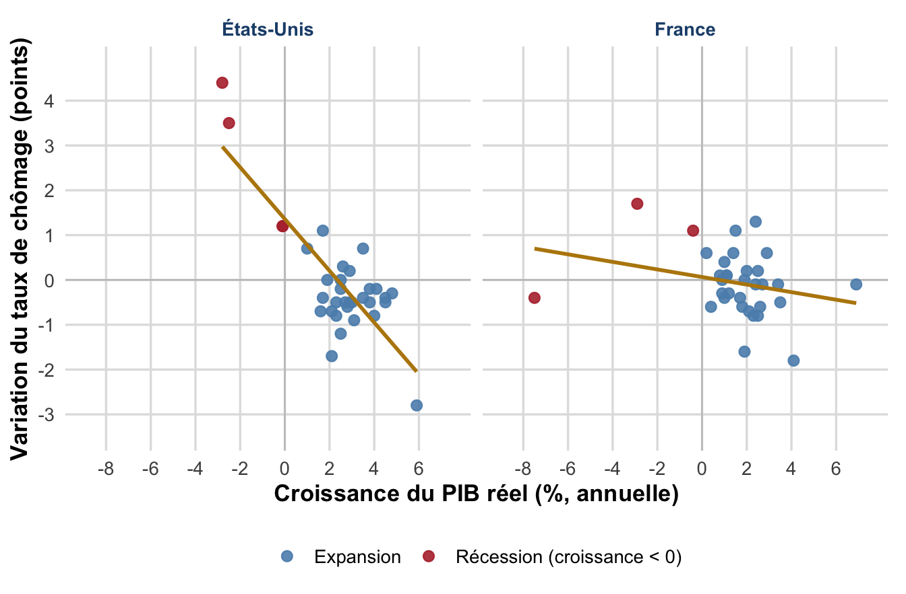
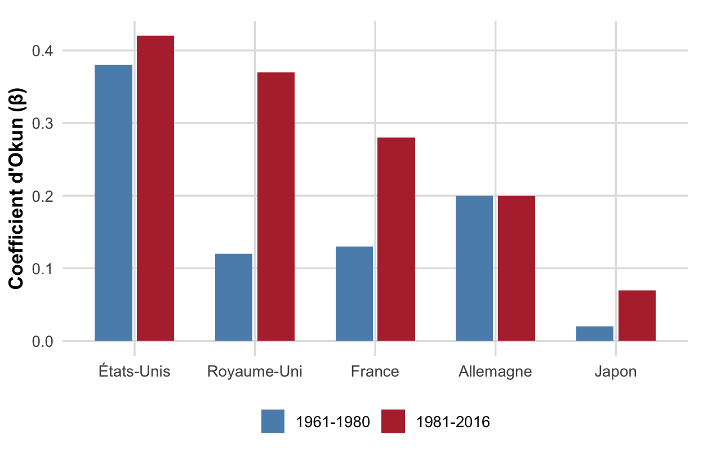
Note
Le coefficient d’Okun mesure la baisse du taux de chômage (en points) associée à une hausse de 1 point du taux de croissance du PIB réel. Il varie fortement selon les pays et les périodes : plus élevé aux États-Unis et au Royaume-Uni (marchés du travail flexibles), plus faible en France et surtout au Japon (ajustement de l’emploi plus rigide face aux variations de la production).
La courbe de Phillips : de la relation initiale au NAIRU
a) La version initiale (1958-1960). A.W. Phillips (1958) met en évidence, pour le Royaume-Uni sur 1861-1957, une corrélation négative entre le taux de croissance des salaires nominaux et le taux de chômage (Phillips 1958). Samuelson et Solow (1960) retrouvent une relation similaire pour les États-Unis et l’étendent à la relation inflation-chômage : les entreprises répercutant les hausses de salaires sur leurs prix de vente, un chômage faible s’accompagne d’une inflation plus élevée, et réciproquement. Cette relation devient centrale dans la politique macroéconomique des années 1950-1960 : les gouvernements peuvent apparemment choisir un point sur l’arbitrage inflation-chômage.
b) La critique monétariste : Friedman-Phelps et le NAIRU. À partir des années 1970, la relation se brise : les chocs pétroliers provoquent une stagflation (inflation et chômage élevés simultanément), et les salaires s’indexent plus systématiquement sur l’inflation passée. Milton Friedman (1968) et Edmund Phelps réinterprètent la relation en insistant sur le rôle des anticipations d’inflation (Friedman 1968) : l’arbitrage inflation-chômage n’existe qu’à court terme, tant que les salariés sous-estiment l’inflation réelle (anticipations adaptatives, fondées sur l’inflation passée).
Cette réinterprétation débouche sur la notion de NAIRU, taux de chômage naturel compatible avec une inflation stable :
NAIRU (Non-Accelerating Inflation Rate of Unemployment) : taux de chômage compatible avec une inflation stable, c’est-à-dire pour lequel l’inflation observée est égale à l’inflation anticipée. NAIRU = taux de chômage naturel = taux de chômage structurel. Si \(u < u^n\), l’inflation accélère ; si \(u > u^n\), elle décélère. En ordres de grandeur usuels : NAIRU proche de 6 % aux États-Unis, mais nettement plus élevé en Europe continentale (9-10 % en France sur les décennies récentes), un écart qui illustre déjà le rôle des institutions du marché du travail développé au §2.3 avec le modèle WS-PS.

La courbe de Phillips « augmentée des anticipations » s’écrit : \[ \pi = \pi^a - a\,(u - u^n) \] où \(\pi\) est l’inflation observée, \(\pi^a\) l’inflation anticipée, \(u^n\) le taux de chômage naturel (NAIRU) et \(a > 0\) un paramètre de sensibilité. À court terme, pour \(\pi^a\) donné, la relation entre \(u\) et \(\pi\) reste décroissante (chaque droite bleue/rouge du graphique). À long terme, les anticipations s’ajustent (\(\pi^a = \pi\)) et la relation devient verticale au niveau \(u^n\) : il n’existe alors plus d’arbitrage entre inflation et chômage, seul le niveau de production potentiel (quantité et qualité du travail, stock de capital, progrès technique) détermine le chômage de long terme.
c) Anticipations rationnelles : l’absence d’arbitrage même à court terme. Une étape supplémentaire est franchie par la Nouvelle Macroéconomie Classique (Robert Lucas, Thomas Sargent, Neil Wallace), à partir du concept d’anticipations rationnelles introduit par John Muth (1961) : les agents utilisent toute l’information disponible pour former leurs anticipations, de sorte qu’en moyenne l’inflation anticipée est égale à l’inflation observée. Dans ce cas, une politique monétaire anticipée par les agents n’a aucun effet réel, même à court terme : le salaire réel n’est influencé que par des déterminants réels (productivité). Seule une politique monétaire surprise peut avoir un effet transitoire sur l’emploi.
Les données confirment ce schéma théorique : le nuage de Phillips effectivement observé aux États-Unis illustre concrètement la rupture prédite par Friedman et Phelps entre les années 1960, où la relation négative tient nettement, et les années 1970-1980, où elle se brise à mesure que l’inflation anticipée s’ajuste à la hausse.
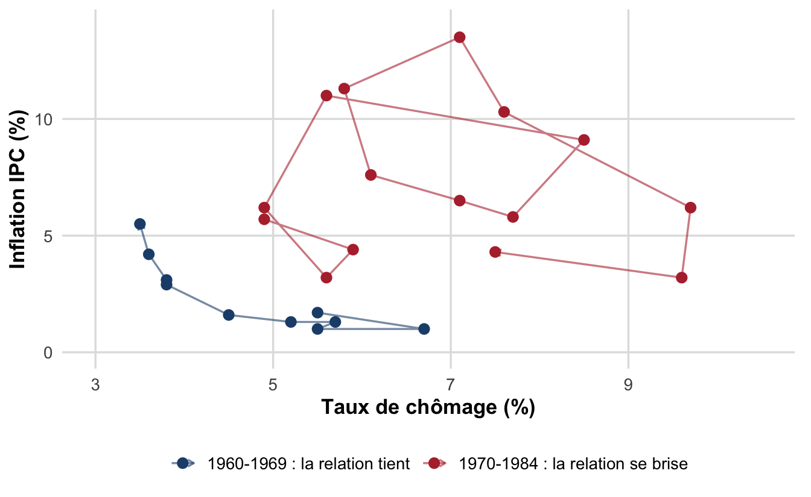
Vue en série temporelle, la même période fait apparaître la stagflation : chômage et inflation montent ensemble lors des deux chocs pétroliers, une configuration que la courbe de Phillips initiale (relation inverse) ne peut pas expliquer.

AstucePour aller plus loin
Depuis les années 1990, la relation inflation-chômage a de nouveau changé de forme selon les pays : faible inflation et faible chômage aux États-Unis, en Allemagne et dans les pays nordiques ; faible inflation mais chômage élevé en France. Ce constat renforce l’idée que la position et la pente de la courbe de Phillips dépendent fortement des institutions nationales, thème repris avec le modèle WS-PS.
2.3 Le modèle Wage Setting–Price Setting (WS-PS)
Logique générale
Le modèle WS-PS, développé par Layard, Nickell et Jackman (Layard et al. 1991), analyse le chômage d’équilibre résultant de la confrontation entre la politique de prix des entreprises et la dynamique des salaires. On parle de chômage d’équilibre car, si rien ne change dans le mode de fixation des prix et des salaires, il perdure durablement. Comme dans l’approche keynésienne, aucune force de rappel automatique ne ramène l’économie au plein emploi : mais ici, le chômage résulte de facteurs institutionnels (degré de concurrence sur les marchés, pouvoir de négociation des salariés, niveau d’indemnisation du chômage) plutôt que d’une insuffisance conjoncturelle de la demande.
Le modèle articule deux niveaux : au niveau microéconomique, chaque entreprise fixe son salaire \(w\), son prix de vente \(p\) et son niveau d’embauche ; au niveau macroéconomique, l’agrégation de ces décisions individuelles fait émerger deux courbes, WS et PS, dont la confrontation détermine le salaire réel et l’emploi total.
La fixation des salaires (WS)
Deux mécanismes, présents dans toutes les économies malgré des différences institutionnelles (négociation collective ou individuelle), expliquent que les salaires soient fixés au-dessus du salaire de réserve :
Salaire d’efficience (Leibenstein, 1957 ; Shapiro & Stiglitz, 1984 (Shapiro et Stiglitz 1984)). Un salaire plus élevé que le salaire d’équilibre incite les travailleurs à fournir davantage d’effort, ce qui accroît leur productivité et donc les profits de l’entreprise. Origines : asymétries d’information sur la productivité des candidats (anti-sélection), sur l’effort fourni une fois en poste (aléa moral), et volonté de fidéliser la main-d’œuvre pour limiter les coûts de rotation.
Pouvoir de négociation. Même sans négociation collective, les travailleurs disposent d’un pouvoir de négociation d’autant plus fort que leur emploi est qualifié (difficile à remplacer) et que le taux de chômage est bas (peu de concurrents disponibles). Voir la théorie insiders-outsiders de Lindbeck & Snower (1986), selon laquelle les salariés en place (« insiders ») utilisent leur pouvoir de négociation pour préserver leur salaire et leur emploi, au détriment des chômeurs (« outsiders »).
Ces deux mécanismes se résument dans l’équation de fixation des salaires : \[ W = P \cdot F(u, z) \] où \(P\) (effet positif) est le niveau général des prix, \(u\) (effet négatif) le taux de chômage, et \(z\) (effet positif) une variable composite regroupant les autres déterminants (indemnisation chômage, pouvoir syndical, salaire minimum…). En divisant par \(P\) : \[ WS : \quad \frac{W}{P} = F(u, z) \] La courbe WS est donc décroissante : plus le chômage est élevé, plus le salaire réel négocié est bas.
La fixation des prix (PS)
Par simplification, le seul facteur de production est le travail, avec une productivité \(\lambda = 1\). En concurrence imparfaite, les entreprises appliquent un taux de marge \(m > 0\) sur leur coût marginal : \[ P = (1+m)\,W \quad\Longrightarrow\quad PS : \quad \frac{W}{P} = \frac{1}{1+m} \] Le salaire réel compatible avec le taux de marge des entreprises ne dépend pas du taux de chômage : la courbe PS est donc horizontale. Sa position dépend de deux facteurs : le degré de concurrence sur les marchés (une baisse de la concurrence augmente \(m\), donc abaisse la courbe PS) et la productivité du travail (une hausse de \(\lambda\) relève la courbe PS).
Le chômage d’équilibre
Le taux de chômage d’équilibre \(u^*\) est celui pour lequel le salaire réel négocié (WS) égalise le salaire réel compatible avec le taux de marge des entreprises (PS) : \[ F(u^*, z) = \frac{1}{1+m} \]
NoteApplication numérique (valeurs indicatives, cours WS-PS)
Soit \(WS : \dfrac{W}{P} = 0{,}75 - 0{,}02\,u\) et \(PS : \dfrac{W}{P} = \dfrac{1}{1+m}\) avec \(m = 0{,}43\).
\(PS = \dfrac{1}{1{,}43} \approx 0{,}699\). En résolvant \(0{,}75 - 0{,}02\,u^* = 0{,}699\), on obtient \(u^* \approx 2{,}5\) (en unités du modèle) et un salaire réel d’équilibre \(\approx 0{,}699\). Une hausse du taux de marge (fusion sectorielle, \(m\) passant par exemple à \(0{,}50\)) abaisse la courbe PS (\(PS = 1/1{,}5 \approx 0{,}667\)) et augmente donc le chômage d’équilibre.
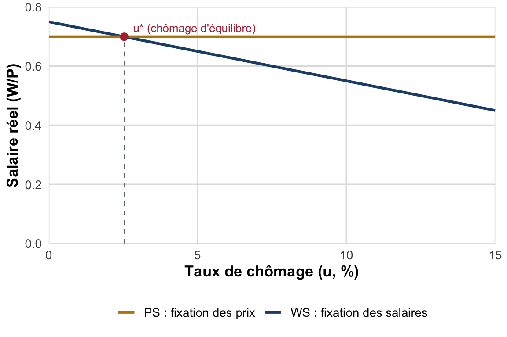
Terminologie à retenir : taux de chômage d’équilibre = taux de chômage structurel = taux de chômage naturel. À ce taux, l’emploi et la production sont en phase avec les capacités productives de l’économie, le modèle WS-PS est donc, comme le NAIRU, un cadre de long terme.
Déterminants et implications de politique économique
Plusieurs éléments déplacent l’une ou l’autre courbe, et donc \(u^*\) : le coût du travail (fiscalité, subventions à l’embauche, salaire minimum), le niveau des indemnités chômage, le pouvoir syndical, l’intensité de la concurrence sur les marchés, la productivité du travail. Le tableau suivant résume les principaux chocs :
| Choc | Courbe affectée | Effet sur \(u^*\) |
|---|---|---|
| Baisse de la concurrence (hausse de \(m\)) | PS \(\downarrow\) | \(u^*\) \(\uparrow\) |
| Hausse du pouvoir syndical / des indemnités chômage | WS \(\uparrow\) | \(u^*\) \(\uparrow\) |
| Subvention sur les salaires (baisse du coût du travail) | WS \(\downarrow\) | \(u^*\) \(\downarrow\) |
| Hausse de la productivité du travail | PS \(\uparrow\) | Effet ambigu sur \(u^*\) (dépend du partage salaire/profit) |
| Baisse de la demande globale | Aucune (chômage conjoncturel additionnel) | Chômage total \(\uparrow\), au-delà de \(u^*\) |
Dans ce modèle, le chômage est involontaire mais non keynésien : il ne provient pas d’une insuffisance de la demande globale mais de l’absence de marchés parfaitement concurrentiels et du pouvoir de négociation des salariés, donc des politiques de prix des entreprises et des exigences salariales des travailleurs.
2.4 La théorie de l’appariement et la courbe de Beveridge
Le marché du travail dans une perspective dynamique
Les trois cadres précédents (néoclassique, keynésien, WS-PS) raisonnent sur une structure statique : l’emploi et le chômage y sont analysés comme des stocks. Or cette vision statique peine à expliquer certains faits : même en période de chômage faible, environ 15 % des emplois sont créés et détruits chaque année dans les pays développés, et il n’est pas rare d’observer simultanément un chômage élevé et un grand nombre d’emplois vacants non pourvus. Il faut donc analyser le marché du travail en termes de flux : créations et destructions d’emploi, entrées et sorties du chômage, mouvements entre emploi, chômage et inactivité.
La courbe de Beveridge
Courbe de Beveridge. Représentation graphique de la relation décroissante entre le taux de chômage \(u\) et le taux d’emplois vacants \(v\). Au cours du cycle économique, l’économie se déplace le long de cette courbe : plus la conjoncture est favorable, plus les emplois vacants augmentent et plus le chômage diminue.
Le point où la courbe de Beveridge croise la droite de pente 45° (\(u = v\)) correspond, selon Beveridge, à une situation de « plein emploi » : chômeurs et emplois vacants sont en nombre égal, il n’y a pas de tension particulière sur le marché du travail (la probabilité de sortir du chômage égale la probabilité de pourvoir un poste vacant). Si des chômeurs subsistent malgré tout à ce point, ce n’est pas, au sens de Keynes, un problème d’insuffisance de la demande globale, mais un problème d’appariement : les employeurs ne trouvent pas les profils recherchés, et réciproquement.
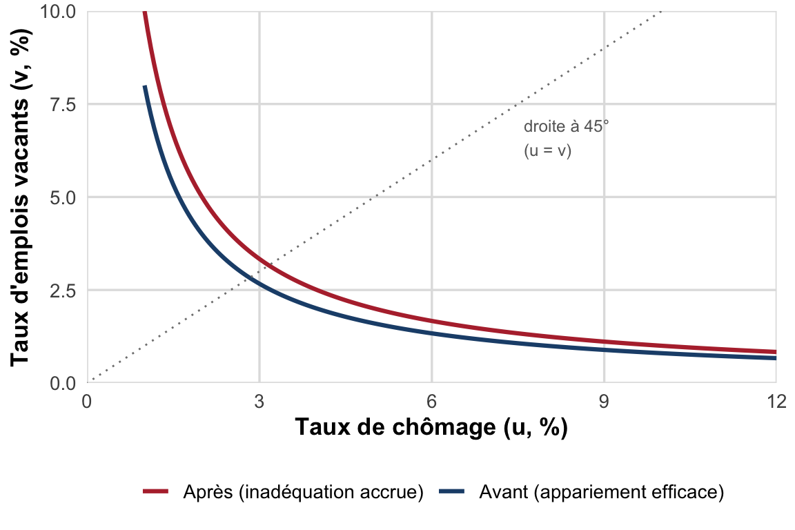
Deux types de mouvements doivent être distingués :
- le long de la courbe : un choc de demande positif déplace l’économie vers le haut-gauche (plus d’emplois vacants, moins de chômeurs, tension élevée sur le marché du travail) ; un choc de demande négatif la déplace vers le bas-droite (peu de tension) ;
- la courbe elle-même se déplace lorsque le processus d’appariement se détériore : il faut alors davantage d’emplois vacants pour atteindre le même taux de chômage. C’est le phénomène observé en Europe à partir des années 1970, sous l’effet conjugué des mutations technologiques (destructions d’emplois et recherche de nouveaux profils) et de l’hystérèse du chômage (déqualification des chômeurs de longue durée, qui deviennent moins « appariables »).
Le cas français récent illustre concrètement ces deux mouvements.
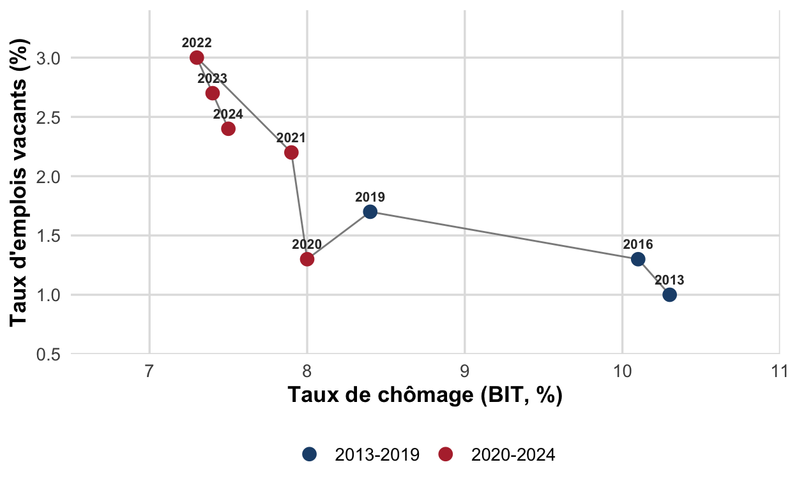
Note
Avant 2020, la France se déplace le long d’une courbe à peu près stable au fil du cycle. À partir de 2020, la courbe se déplace vers l’extérieur : à chômage comparable, il faut désormais davantage d’emplois vacants, signe de tensions de recrutement accrues.
Le modèle DMP (Diamond-Mortensen-Pissarides)
Les modèles d’appariement, développés par Peter Diamond, Dale Mortensen et Chris Pissarides (Diamond 1982; Mortensen et Pissarides 1994) (distingués par le prix Nobel d’économie en 2010) approfondissent la logique de la courbe de Beveridge en modélisant explicitement la rencontre entre chômeurs et emplois vacants.
Tension sur le marché du travail \(\theta = v/u\) (ratio emplois vacants sur chômeurs). Plus \(\theta\) est élevé, plus le marché du travail est « tendu » (nombreux postes vacants pour peu de chômeurs), et plus la probabilité de pourvoir un poste vacant est faible pour une entreprise donnée, mais plus la probabilité de trouver un emploi est élevée pour un chômeur.
L’équilibre du modèle résulte de la confrontation de deux relations, toutes deux fonctions de \(\theta\) et du salaire réel \(w/p\) :
- la demande de travail des entreprises (relation décroissante entre \(\theta\) et \(w/p\)) : un salaire réel élevé réduit la demande de travail, donc le nombre de postes créés, donc \(\theta\) ;
- la courbe des salaires (relation croissante entre \(\theta\) et \(w/p\)) : plus la probabilité de retrouver un emploi est élevée (marché tendu), plus le pouvoir de négociation des travailleurs (et donc le salaire exigé) est fort.
Les déterminants du chômage dans ce cadre incluent : l’efficacité du processus d’appariement, l’intensité de l’effort de recherche des chômeurs, le taux de destruction des emplois (séparation), le pouvoir de négociation des travailleurs, le niveau des revenus de remplacement (indemnisation chômage), la productivité du travail et le coût du capital.
ImportantÀ retenir : deux leviers de politique de l’emploi issus des modèles d’appariement
- Faciliter les créations et destructions d’emplois (flexibiliser le marché du travail) : les coûts d’embauche et de licenciement ralentissent l’ajustement de l’emploi à la conjoncture et allongent la durée du chômage, ce qui contribue à expliquer un chômage moins fluctuant, mais souvent plus élevé et plus persistant, en Europe que dans les pays anglo-saxons. Nuance empirique : la relation entre degré de protection de l’emploi et niveau du chômage n’est pas clairement établie dans les données.
- Améliorer l’efficacité de l’appariement : renforcer l’accompagnement des chômeurs (France Travail), accroître les incitations et l’efficacité de la recherche d’emploi, favoriser la mobilité géographique et professionnelle des travailleurs.
AstucePour aller plus loin
Ces deux leviers (flexibilisation et amélioration de l’appariement) structurent une bonne partie des réformes du marché du travail menées en France et en Europe depuis les années 2000 (réforme de Pôle emploi/France Travail, réformes du droit du travail). Ils seront analysés en détail au Chapitre III.
Synthèse : quatre regards complémentaires sur le chômage
| Cadre théorique | Mécanisme central | Type de chômage expliqué | Horizon |
|---|---|---|---|
| Néoclassique | Salaire réel trop élevé par rapport à l’équilibre de marché | Volontaire / classique | Long terme |
| Keynésien | Insuffisance de la demande effective | Involontaire / conjoncturel | Court terme |
| WS-PS | Pouvoir de négociation salariale + pouvoir de marché des entreprises | Involontaire / structurel (chômage d’équilibre) | Long terme |
| Appariement (DMP) | Frictions et inadéquation dans la rencontre offre-demande | Frictionnel / d’inadéquation | Court et long terme |
Ces quatre cadres ne s’excluent pas mutuellement : ils mettent l’accent sur des mécanismes différents, pertinents à des degrés divers selon les pays, les périodes et les segments du marché du travail. Retenir leurs hypothèses respectives (flexibilité ou non des salaires, rôle de la demande globale, institutions de négociation salariale, frictions d’appariement) est indispensable pour comprendre les choix de politique économique analysés au Chapitre III, consacré aux politiques de l’emploi en France.
Les références
Diamond, Peter A. 1982. « Wage Determination and Efficiency in Search Equilibrium ». Review of Economic Studies 49 (2): 217‑27.
Friedman, Milton. 1968. « The Role of Monetary Policy ». American Economic Review 58 (1): 1‑17.
Layard, Richard, Stephen Nickell, et Richard Jackman. 1991. Unemployment: Macroeconomic Performance and the Labour Market. Oxford University Press.
Mortensen, Dale T., et Christopher A. Pissarides. 1994. « Job Creation and Job Destruction in the Theory of Unemployment ». Review of Economic Studies 61 (3): 397‑415.
Phillips, A. W. 1958. « The Relation between Unemployment and the Rate of Change of Money Wage Rates in the United Kingdom, 1861–1957 ». Economica 25 (100): 283‑99.
Shapiro, Carl, et Joseph E. Stiglitz. 1984. « Equilibrium Unemployment as a Worker Discipline Device ». American Economic Review 74 (3): 433‑44.
Notes de bas de page
Résumé rédigé d’après les cours de C. Mathonnat (2018-2019) et de M. Ouedraogo (2025-2026), CERDI, Université Clermont Auvergne.↩︎